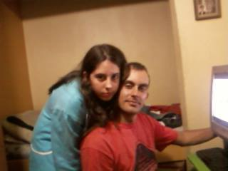

Meu inicio no mundo digital
Olá pessoal! Tudo bem com vocês?
Meu inicio no mundo digital foi mais ou menos em 2013, nunca tinha dado muita atenção para computadores,
gostava mais do bom e velho video game, até que um dia por algum motivo fui na lan house de um amigo,
(acho que foi para imprimir algo). Em um clima bem descontraído tinha um grupo de amigos jogando CS,
pronto ali foi amor a primeira vista por jogos online.
Comecei a montar meu primeiro PC com peças usadas mesmo e depois dai não parei mais.
Essa é minha irmã e eu com meu primeiro computador, não da pra ver muito bem mas o monitor é de tubo
ainda.
22 de novembro de 2013
